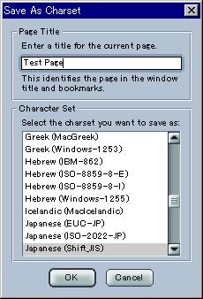

Seamonkey Editor Character Coding Menu UE Specifications
Written by: Katsuhiko Momoi
Last Update: 2/26/2001
** Thanks to Tague Griffith,
Kathy
Brade, Bobj Jung, Teruko
Kobayashi, Yuying Long, Charlie
Manske, Frank Tang, and Roy
Yokoyama for comments & suggestions.
Address Comments to: mozilla-i18n@mozilla.org,
mozilla-editor@mozilla.org,
and mozilla-ui@mozilla.org,
or post articles at: netscape.public.mozilla.i18n,
netscape.public.mozilla.editor,
and netscape.public.mozilla.ui.
Note: This document contains specific UI proposal for the Editor charset menu. The Editor charset menu UI is nearly identical to the Browser charset menu published on the Mozilla.org site. See: http://www.mozilla.org/projects/intl/uidocs/browsercharmenu.html
Note 2: Version 1.2 clarifies a number of items that had not been addressed in version 1.1. It also eliminated discussion of alternatives and instead focus on the specifications currently available with Mozilla builds circa 2/26/2001. For the discussion of proposed alternatives and other details omitted from this new version, see version 1.1 document.
Contents
Editor Charset Menu -- General features
Save, Save as ..., and Save as Charset ...
- Current Document Encoding
- Save, Save as..., and Save as Charset menu definitions.
- illustration of Save as ... Charset dialog
- Opening a new document
- Opening an existing document into Editor
- Opening an existing document via Browser
- Changing Character Coding Menu selection
- Auto-Detection
0. Editor Charset Menu: General Features
- Browser & Messenger & Editor share the same View | Character Coding menu architecture. See here for the Dynamic charset menu proposal. Most of this proposal has been already implemented in the Browser component at M14 and also appear in Netscape 6.0/6.01. They include the following features
- Auto-Detector list
- More menu (the remainder -- what is not on the Static menu below.)
- Customize dialog -- this lets you customize the Static part of the encoding menu below.
- Static encodings list
- A list of encodings that will appear in the top tier of the View | Character Coding menu whether or not a cache list has been built.
- Cached encoding list (most recently used 5 encodings that are different from the items on Static list).
- Semantics:
- Switching a View | Character Coding menu item means ..
- Load/reload existing page/message assuming the document to be in the chosen character encoding. We will adhere to this interpretation as much as possible. (Cf. See below for the notion of "Charset Override".)
- In 4.x, this menu was also used to convert source document into another charset under certain conditions. This function will be borne by the "Save as Charset..." menu in Mozilla. (Note: Under circumstances when
00. Browser/Editor/Messenger/Mail Editor: "Save", "Save as...", and "Save as Charset" (Editor only) menu items.:
- Current Document Encoding:
- The current document encoding is the encoding menu item which is marked by a bullet in front of it. The current encoding is determined by an algorithm as defined in the Browser Character Coding menu specification document. It is critical to understand this concept for saving actions in the Editor.
- On a new document, the Current Document encoding will be the same as the Default Encoding in Edit | Preferences | Navigator | Languages | Character Coding.
- On an existing document, the Current Encoding will be determined honoring the hierarchy: HTTP charset > Document Meta Charset tag > Auto-detection (if ON) > Current Document Encoding (if opening it via File | Edit Page menu) > Default Encoding. Default Encoding will be used only if the Current Document is not available, e.g. opening directly into the Editor window without first opening it in the Browser window. In other words, the highest element in the hierarchy has precedence over the lower elements in determining what the Current Document Encoding.
- Even is the Current Document has been determined, the user can manually change it by engaging the View | Character Coding menu.
- File | Save:
- Saves the current document using the Current Document Encoding.
- File | Save as:
- Like the File | Save menu, this menu saves the current document using the Current Document Encoding. But if offers an opportunity for the user to saves it as a separate document with a different name.
- File | Save as Charset ... menu:
- In addition to File | Save and File Save as... menu items which also in Browser and Mail window, Editor/Composer will have File | Save as Charset ... menu, which is not found in the Browser or Mail window. This menu allows you to save the current document using an encoding different from the Current Document Encoding.
- Note: It is possible to incorporate this function in the File | Save as... menu but as of this writing, there is no cross-platform widget to accommodate these 2 functions at the same time. Thus, as a compromise, the selection of a charset is carried by this separate menu and dialog window -- i.e. bring up an XPApps widget with charset selection combobox.
- When this menu is engaged, a window will pop up to prompt you to name a title when there is no existing title for the document. If the title of the document already exists, it will be filled in as the default name. Note that the title of the document is the title in the HTML document which appears between the tags, <TITLE> and </TITLE>.
- The dialog window also contains a list of character encodings to choose from. The default suggested will be the Current Document Charset. The list is the same list as the regular charset menu.
- Note: This dialog window does not list a format choice, e.g. HTML or Plain text. The format choice will be left to the Save as... dialog window.
- When the charset is chosen from the dialog and the "OK" button is pressed, this will bring up the Save as... window (as defined above). The user then is able to choose a different encoding than the Current Document Encoding.
- Format:
- In HTML format, the user can save the document using any encoding. If the chosen encoding does not support characters in the document, then NCRs will be used instead of raw bytes. (Note: Mozilla will not warn the user of unreasonable conversion. (e.g. Japanese document into ISO-8859-1.))
- Plain text format: As of this writing, there is a bug in that all documents are saved as an HTML file even if the extension, .txt, is supplied. Thus, the following is a specification for the future.
- Under normal conditions, the system locale default charset will be suggested to save the document for each language group if the Current Document Encoding does not match the OS locale charset. For example, Shift_JIS will be suggested when the user attempts to save an EUC-JP document into a plain text format. (Note: I18n provides an API for determining default charset for each language group under a specific locale. (e.g. EUC-JP if the page is in Shift_JIS and the platform is Unix EUC locale.) )
- For Macintosh, we need to suggest Mac-specific encoding names for the ISO-8859-x family of encodings. For example, if the Current Document Encoding is ISO-8859-1, then the default suggestion for the encoding list should be MacRoman rather than ISO-8859-1. For Windows-1252 pages, we should do the same, i.e. provide MacRoman as the default choice. If offering MacRoman will corrupt the data, e.g. Windows-1252 proprietary characters, then we will offer a dialog window explaining this and offering a choice to save it as Windows-1252 page or as a MacRoman page with some data corruption. We might also suggest that it should be saved as an HTML page instead.
- If the user changes the default encoding suggestion matching the Current Document Encoding, then we will honor the user's choice and saves it in plain text format using that encoding selection. In this case, there could be some data corruption or loss. We should put up a warning dialog in cases when the characters contained in the document cannot be supported by the chosen encoding. (Note that in HTML format, we will simply use NCRs in such a case. This problem arises only for the plain text format.)
- There is one advantage of having two menus instead of one is that only users who need to convert document encoding have to engage the 2nd menu. Most users will simply select the first one without the encoding conversion option.
- Charset Override: Save as Charset ... action under certain conditions could lead to changing the existing Meta charset tag if it replaces the current document. This amounts to a Charset Override as discussed below.
- Meta HTTP-Equiv Charset tag:
- Every document must have an appropriate meta charset tag or there must be a pre-existing valid meta charset tag in the document. Such a meta tag must match the Current Document Charset.
- Charset Tag normalization: We should correct a non-standard or alias charset name into the standard one when an existing document is opened or saved. For example, x-sjis will be changed to Shift_JIS. (Open issue: Should we allow the user to retain a non-standard name? If we allow this option, we might want to offer a dialog asking the user to approve of the normalization. If the user says yes, then the existing tag will be normalized. Otherwise, we will leave it the same as before.)
- In our code, the meta charset tag is actually generated when creating a DOM tree. Thus, it is not necessary to save a document to see the change in the meta-tag. For example, View | Page Source should always reflect the correct meta charset tag even if the document has not been saved.
Illustration of "File | Save as Charset ..." dialog:

Meaning of Character Coding menu related actions:
1. Opening a new document:
- A new document will open with the Character Encoding set to the Default Encoding determined by the user's default language. (i.e. Edit | Preferences | Navigator | Languages | Character Coding). The Default Encoding is discussed in the Browser document under a section called "Fallback Encoding". In the prefs.js file, the value of this item is represented by intl.charset.default.
- The user can change the Current Document Encoding as many times as he/she wishes as long as no data has been input.
2. Opening an existing document directly into Editor:
- An existing document with a document Meta HTTP-Equiv charset tag will open with the meta charset value in the document as the Current Document Encoding. If a valid alias of a known charset is used in the original document, that tag will be normalized with a dialog asking for permission when opening an existing document. If the user refuses the offer, we will use the original meta charset.
- An existing document with HTTP charset information will open with the specified value obtained from the sever as the Current Document Encoding.
- An existing document with both HTTP and document Meta HTTP-Equiv charset info will open with the HTTP value obtained from the server as the Current Document Encoding. (i.e. If the 2 values are not identical, the HTTP value will predominate.)
- An existing document with neither the HTTP nor Document Meta HTTP-Equiv charset information will open with the Default Encoding as specified in Edit | Preferences | Navigator | Languages | Character Coding as the Current Document Encoding..
- If the user has selected an auto-charset detection module, it will determine the Current Document Charset unless it fails to detect the encoding. In the latter case, the Default Encoding as specified in Edit | Preferences | Navigator | Languages | Character Coding will be used as the Current Document Encoding.
- If an existing document has an unknown or incorrect Meta-charset tag: (This does not include the case where the document bears an alias of a valid charset name.)
- We will present a dialog: "Editor does not recognize 'ISO-8849-1' as a valid charset. This document will open in your default charset: Shift_JIS. Please correct the error with the Reload in Character Encoding menu."
3. Opening an existing document via Browser's "Edit" menu:
- An existing document will open with the Current Document Charset as determined by Browser.
- In reality, the Character Encoding values here would be nearly identical to the cases in 2 above.
4. Changing Charset/Character Coding selection:
Note on 'Dirty' document: We will gray out the Charset menu in all cases where an action is equivalent to 'saving the document'. We call such a state of the document as 'dirty'. Strictly speaking, when a meta-charset is created in a new document in the DOM tree, such a document is already 'dirty'. This is actually the definition used in the Editor code. But for the purpose of Character Coding menu UI specifications, being 'dirty' must include actual HTML data changes. Simply changing the Character Coding menu (i.e. reloading the document using the new encoding) will be excluded from this criteria.
Menu enabled or disabled ? -- Two general principles are as follows:
- The charset menu will be disabled in all cases in the Editor except when the document is not dirty (i.e. just saved, just opened (either a new or existing document), or just reloaded -- with no further new input). See the next section for the cases when the Editor Character Coding menu will be disabled.
- When the charset menu is enabled in the editor, selecting one of the charsets in the menu will cause the editor to reload the current document assuming the newly selected charset as the source charset. The Charset (tag) will be overridden if the document has a valid/known document HTTP-Equiv meta-tag. See the next section for the cases when the Editor Character Coding menu will be disabled.
These 2 principles will cover the following sorts of specific cases:
- Menu Enabled for changing/reloading:
- On a new document meeting if there has been no input. This is a fairly common practice by the user. As long as there has been no new input, the user should be able to reload as many times as he/she wishes.
- On an existing document without document HTTP-Equiv meta-tag and prior to any additional input -- this includes a state where the user has just reloaded the document but with no further input. We will allow an infinite number of reloading as long as the document has not had new input.
- The following reloading is allowed but will lead to changing an existing document HTTP-Equiv charset tag, i.e. Charset Override as described in the section on Charset Override below..
- Menu change on an existing document with a valid/known document HTTP-Equiv meta-tag and prior to additional input -- this includes a state where the user has just saved the document.
- Menu Disabled/Grayed out: The following situations will not allow a change in the View | Character Encoding menu, i.e. the document is in 'dirty' state:
- On a new document -- when there has been some input under a selected charset. Save this document first, or use the Save as Charset... menu instead.
- On an existing document after input has been made but the document has not been saved yet. Either Save this document first, or use the Save as Charset... menu instead.
5. Selecting Auto-Detection:
- When opening a new document, if auto-detection module is selected, Mozilla will open with the Default Encoding as the Current Document Encoding.
- Selecting Auto-Detect menu which contains no saved data, i.e. a new document:
- Auto-detection in the context of Editor makes sense only if the document contains existing/saved data.
- Therefore, the Current Document Encoding will not be changed it this case.
- (OPen issue: There could be an alert dialog in such a case: "You cannot use Auto-Detection on a document with no data in it." There will be only one "OK" button in this dialog and when "OK" is clicked on, it will return to the new document without any further action. That is the Current Document Encoding will not be changed.)
- If Auto-detection menu is chosen on a new document which contains some input but so far has not been saved, then we should
- have the auto-detection have no effect -- i.e. the Current Document Encoding will not be changed.
- If the user has only a Browser or Mail window open and then opens a brand new Editor document, and if an Auto-Detection module is ON, then the new document will open with the Default Encoding -- since there is no detection needed. (See section 1 "Opening a new document:" above.)
- Selecting Auto-Detect menu which contains saved/pre-existing data but no charset specified or sent from a HHTP server.
- This action should reload the document assuming the charset determined by the auto-detection process.
- If for some reason, auto-detection fails, then the Default/Fallback Encoding will be used.
- Selecting Auto-Detect menu which contains saved/pre-existing data with the charset specified:
- Note: As of this writing, changing an auto-detection menu does not override an existing charset tag or HHTP charset from the server. So what is written below is a future specification.
- If the result of Auto-Detection agrees with the current charset value, then nothing further happens.
- If the result of Auto-Detection is different from the current charset, then this is a case of Charset Override. Convert/save the document assuming the newly detected charset. --> See the next section.
- Note: Auto-detection on opening an existing document has been covered in section titled: "2. Opening an existing document directly into Editor:"
Charset (Tag) Override: a catalog of cases.
For Editor: Any time we encounter a condition in which the Editor potentially needs to change the pre-existing document HTTP Meta-Equiv tag, we have a case of Charset Override. The following catalogs these cases and the expected Editor actions. Alternatively, we might simply convert the document's encoding using NCR's if necessary. In the current implementation, this latter option is in force.Expected Action 1: Change the Current Document Encoding (bullet mark) and the meta tag in the DOM tree (and eventually save it in this encoding). If there are characters not supported in the chosen encoding. They will be converted to NERs or NCRs.Expected Action 2: Change the Document Encoding of the target document. If there are characters not supported in the chosen encoding. They will be converted to NERs or NCRs. If the same name as the original document is chosen, then when this file is saved using a new encoding, the Current Document Encoding of the open document will be changed and it will be reloaded. If it saved into a different file, the current document will stay open with no change.
Expected Action 3: Present a warning dialog that the Charset tag is either incorrect or unknown to Mozilla, and ask the user to try the View | Character Coding menu changes to correct it after the document is opened but with a warning that such attempts may not succeed sometimes, i.e. we just may not support the encoding used in the original document. Offer OK or Cancel as the choices. If OK is selected, Editor will then open this document in the user's Default Encoding. If Cancel is selected, Editor will quit.
- Upon opening a new document,
- If the document's Charset tag is unknown to Mozilla or seems to be incorrect. --> Action 3.
- View | Character Coding ... menu change:
- When the user changes the menu and if the document's current Meta Charset tag is different from the menu selection. --> Action 1.
- Save as Charset... Menu:
- The user has selected a charset different from the existing charset tag, and conversion is reasonable. (e.g. Shift_JIS -> EUC-JP, BIG5 -> UTF-8, etc.) --> Simply save it using NCR's if necessary so as not to corrupt data. (Action 2).
- The user has selected a charset different from the existing charset tag, but conversion is unreasonable. (e.g. Korean --> Shift_JIS, etc.) --> Simply save it using NCR's if necessary so as not to corrupt data. (Action 2). As of this writing, we don't offer a warning dialog in this case.
- View | Character Coding | Auto-Detect menu change:
- This discussion is for future. As of this writing, Auto-detection change cannot effect a change in an existing document with an existing meta-charset tag.
- If the result of Auto-detection contradicts the current charset value --> Action 1.
- When the user switches a Character Coding menu,
- This will be equivalent to "send in the chosen charset".
- There should be a warning against unreasonable "send charset" for given input. e.g. Western encoding for Japanese input.